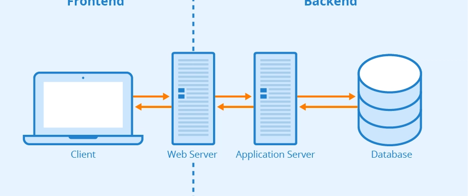
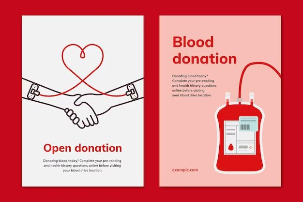
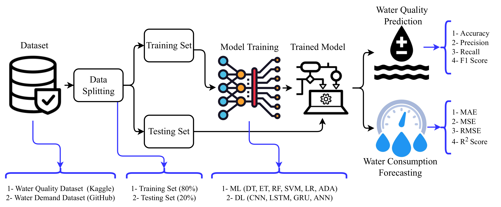

Keerthi Priya's Portfolio
Keerthi Priya Potharaju
Motivated undergraduate with a strong foundation in programming,technical skills seeking an opportunity in a dynamic and growth-oriented environment.Possesses hands-on experience in web development and problem-solving, with a keen interest in learning emerging technologies and applying them to real-world challenges. A quick learner with strong analytical thinking, teamwork abilities, and a passion for building efficient and innovative solutions.
mobile app development

I build efficient and intuitive mobile applications with a strong emphasis on usability and performance. From designing clean interfaces to implementing core functionalities, I aim to deliver seamless experiences on Android and cross-platform environments.
frontend development

I design and develop responsive, user-friendly interfaces using modern web technologies. My focus is on creating visually appealing layouts, smooth navigation, and interactive elements that enhance user experience across all devices and browsers.
backend development
I develop robust server-side applications that handle data processing, authentication, and business logic. With a focus on security, scalability, and performance, I ensure smooth communication between the frontend, database, and server.
Projects
Blood Bank Management system
The Blood Bank Management System is designed to efficiently manage blood donor records, blood availability, and requests from hospitals or patients. It helps in tracking blood groups, reducing manual work, and ensuring timely availability of blood during emergencies. The system improves accuracy, organization, and communication between donors and blood banks.
Water Quality Prediction
The Water Quality Prediction project analyzes water parameters such as pH, turbidity, and dissolved oxygen to predict water safety. Using data analysis and predictive techniques, the system helps identify whether water is safe for consumption. This project supports environmental monitoring and public health by enabling early detection of water contamination.
Chatbot Application
The College Chatbot Application provides instant responses to student queries related to admissions, courses, schedules, and campus information. It reduces workload on administrative staff and offers 24/7 assistance to students. The chatbot enhances communication, accessibility, and user engagement within the college environment.
Skills
- HTML & CSS
- JavaScript
- Python / Java
- SQL & Databases
- Java
About Me
I am a passionate undergraduate who enjoys coding and developing applications that solve real-world problems. I am eager to learn emerging technologies, improve my skills, and work in a collaborative environment that encourages growth and innovation.
Contact
Email: potharajukeerthipriya@gmail.com
Linkedin Profile: View My LinkedIn
Phone: +91 7981539540
Location: Telangana,India